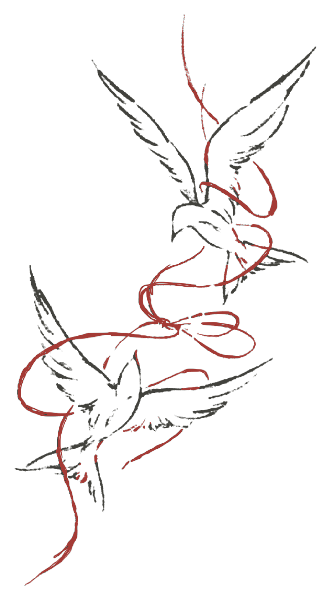

FIELD NOTES · 2026
Making sense
of what’s next.
hi, i’m olivia! i’m a current master’s student studying applied data science at usc. i’m drawn to projects where data and machine learning can shape real decisions, not just improve a benchmark. that has meant studying whether agentic ai failures can be caught before they reach users at Tanium, modeling high-dimensional gene expression at WPI, and building interpretable predictors for nonprofits at BioKind Analytics. now, i’m seeking full-time ai/ml engineer and data scientist roles where careful evaluation can lead to meaningful impact.

A FEW THINGS I’VE BEEN WORKING ON
Selected work
Different questions, connected by curiosity.
Browse by focus
A NOTE ABOUT HOW I WORK
Curious by nature.
Careful by design.
my interest in data and machine learning began with what data leaves out. my dad lived with parkinson’s disease for fourteen years; his symptoms could change from hour to hour, while his clinical record captured only occasional snapshots. everything between those moments had to be remembered, summarized, or lost. that gap still motivates my work: how can we make imperfect data useful without pretending away its uncertainty?
outside of work, you’ll usually find me watching a true-crime documentary, knitting a sweater i started 6 months ago, or studying at my favorite cafe in k-town. i’m naturally curious, detail-oriented, and happiest when i’m learning how something works — whether that means reading a 40-minute physics explainer after one innocent ‘why is the sky blue’ search or digging into a problem whose answer could matter to someone beyond the screen.
that curiosity shapes the way i work. i build and evaluate learning systems with real-world constraints in mind, from retail forecasting and agentic ai to clinical machine learning. i’m especially drawn to problems where evaluation is the hard part: release-lagged data, revised ground truth, and labels that grade themselves. my favorite tool is a predeclared gate — decide what “better” means before you look, then let the numbers argue.
download my resumeeducation
- bachelor’s in computer science
- university of southern california
los angeles, ca
graduating dec 2026 - master’s in applied data science
- university of southern california
los angeles, ca
graduating may 2027
the red string
The red string is this site’s through-line. In folklore, a red thread ties together two people who were always going to find each other — here it ties together questions that keep finding each other, because every project in this portfolio asks the same thing one layer deeper. It’s in the hero drawing, the string each note hangs from, and the thread that scrolls each story: one line of reasoning, pulled taut.
a note on how i work with genai
in this age, it’s so important to not become reliant on genAI and stagnate as an engineer. i use genai as part of my daily workflow, but strictly as a collaborator. early in my career, it was easy to feel satisfied with long reports generated with flashy figures. but i’ve learned that less is more, and explainability for a few key figures matters more than anything. now, i make every effort to audit its output, write my own tests, and independently verify every number before it supports a claim.
and as this age is marked by unprecedented speed of development driven by AI, i stay current by reading papers and their methods from conferences such as neurIPS, ICML, and AAAI; taking courses, most recently andrew ng’s generative ai for everyone; and following researchers and industry voices like yann lecun and rowan cheung on x and youtube. the tools move quickly, and it’s our responsibility to move with them.